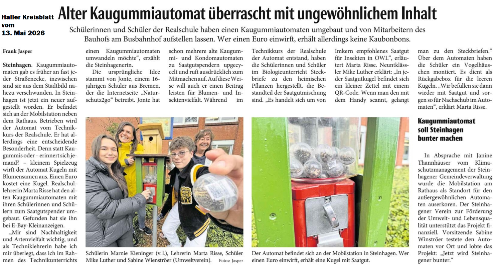

Umweltverein fördert innovatives Schulprojekt in Steinhagen
Ein umgerüsteter Kaugummi-Automat setzt in Steinhagen ein kreatives Zeichen gegen das Insektensterben.
Schülerinnen und Schüler der Realschule haben das Altgerät gemeinsam mit ihrer Techniklehrerin Marta Risse
zu einem Saatgut-Spender umgebaut. Bürgerinnen und Bürger können dort Kapseln mit Blumensamen für 1,- Euro
erwerben und so aktiv die biologische Vielfalt unterstützen.
Um Ressourcen zu schonen, läuft das Projekt im Kreislauf: Die leeren Kunststoffkapseln werden nach der Aussaat in einen darüber angebrachten Nistkasten eingeworfen. Die Jugendlichen sammeln diese anschließend ein, befüllen sie neu und sichern so die Wiederverwendung.
Unser Verein hat diese nachhaltige Aktion sehr gerne finanziell unterstützt. Macht mit und holt euch eure Portion Artenvielfalt!
